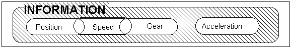

![[Ixion]](/images/ixmetal.gif)
By "Hoddy" Hodson

“That rude, harsh, unfair bastard: Hoddy”.
The problem seems to stem from the way I allocate marks in relation to use of the System. I’ve given a few Associates a lower mark on an Observed Run than they expected.
The instructions to Observers on marking ORs mention the System thus:
70%-80%: This is the “developing” stage where the Associate becomes familiar with Roadcraft. Scores can be inconsistent as the Associate amends their style of riding to incorporate the System.
80%-90%: The Associate shows awareness of the System and starts to link all the phases together, demonstrating also an awareness of why they are doing a particular thing; i.e. positioning for vision.
It’s clear that a score of 80 or over only comes once the Associate is making use of the System. Or, at least, a System – I’ll come back to this later. In my book (it is a tatty copy of Venus in Furs, if you really must know), an Associate should not start getting scores above 79 until their riding is almost always “Systematic”.
So, the System is important for Advanced Riding. But what is a “system” anyway?
Do you ever do the washing up? I know real, rufty tufty ‘bikers don’t, they just smash all the plates after use, but some of you may. Well, there’s a system for washing up.
You wash the glasses first because there’s no grease in the water and you want them clean and sparkly. Then you wash cups – they’re dirtier than glasses, but not greasy. Then plates, then cutlery. And you dry and put away your cooking knives, if at all possible – because good knives can discolour if left to drip dry and, in any case, you or your kids may get cut if sharp knives are left out. Now you wash the pans and finally you wash roasting pans or grill trays – as these may be really greasy – they may even need to be left to soak and you can’t do any more washing up while they occupy the sink, so they get done last. A system – and, I hope, one that makes sense?
Another system, which I’ll wager you know even if you’ve never done DIY, is the one for painting a floor. You start in the corner opposite the exit door, or else you’re going to have long and boring wait, standing in another corner while the paint dries.
A system is a program (in the computer sense) for carrying out a task. Surgeons use systems – they call them “procedures” – when carrying out operations. And, like our own System, they take some learning, which is why you are always advised to have your operation done by a surgeon who has carried the relevant procedure out successfully a few times in the past!
Our System did not spring out of nowhere. The System represented in the diagram above is a 1994 revision and re-statement of the previous 1978 System. This, in turn, sprang from the System for Car Control, which was developed in the late 1950s.
The System was developed by looking at the drivers and riders (usually Police ones) who had the fewest accidents and analysing what they did. The word ‘analysing’ in this context boils down to ‘watching’ and ‘asking’.
A good, safe rider makes “lifesaver” headchecks to clear their blind spot. The best riders make these lifesavers only when they need to and at the last possible instant – so there’s less chance of another vehicle moving onto the area of tarmac they have “cleared”. So – in the terms of the old way of looking at the System – your final action before the manoeuvre is the lifesaver.
A better way of putting it, however, is shown in the new System – between the final gear selection and acceleration there is a pause to re-assess INFORMATION. This does not say you must do or even consider a lifesaver, but says you must consider your information needs – you may require a mirror check or you may need to give a horn warning. The best riders check they know what’s happening around them, at the last possible instant before committing to the hazard – and so should you. So that’s what the System advises.
How do you – how do I – spot that there’s a problem with a rider’s application of the System.
Let me return to my examples:
If you see someone trapped in a corner, with newly painted floor between him or her and the door and a paintbrush in their hand, you can be pretty sure they didn’t apply the relevant system. They’ve “painted themselves into a corner”: a description of failure of a system so powerful that it has actually become part of the language.
If I see someone trying to wash the glasses in the greasy, sudless water left after doing the roasting pan, there’s someone whose “system for washing up” is not being applied very well.
Returning to motorcycling, there are three “symptoms” that show an Associate is not applying the System consistently and well. Which, in turn, dooms them to a mark below 80.
[As an aside here, I should mention that “once is happenstance, twice is bad luck but three times is your fault”. As an Observer, I look for faults that show up three or more times on a run – though, as some Associates well know, I will pick a route or repeat a section of road to give an Associate a chance to repeat their error if they are going to.]
The three main ways a rider can get the System wrong are:
Omit a necessary phase.
Carry out a required phase at the wrong time.
Carry out phases in the wrong sequence.
To look at these briefly (because each one could command many hundred words if covered in detail:
This is hardest to spot. If you miss something out and crash, or have a near miss, it isn’t obviously a System fault – it looks like a Safety fault. On the other hand, if you miss something out and it doesn’t cause a problem, then it can be argued that the action was unnecessary, after all, so you were “right” not to bother. But you might just have been lucky, and an Advanced Rider should never rely on Lady L.
When their Observer says (e.g.) “you missed out several Lifesavers”, a savvy Associate reply “I have good mirrors and they covered the bit of tarmac that I was moving onto; I considered them and decided not to”.
A savvy Observer [if (s)he has a mean streak], faced with this reply, will then shove their front wheel under that Associate at the next similar hazard, just to test whether they speak the truth or are mouthing off.
More seriously, close following lets the Observer perceive what the Associate perceives and they can then easily spot any “missing” actions. E.g.: “you couldn’t see the driver’s face, so a horn warning was required”.
The best example of this would be giving horn warnings or indications too late, when they’d only give the other road user half a second to react.
More worrying is an Associate who is rushing one phase of the System to “buy time” for another. Someone who is braking before they are in Position might be “rushing” the Position phase to buy time for the Speed phase. To put it another way, they are riding too fast for their (current) skills. Either they are riding “fast” to impress – it never does – or they are nor happy braking firmly and want to spread their braking over a longer distance.
Similarly, some Associates are so keen to make Progress that they do not have that short “pause” to Take/ Use/ Give Information between their final gear change and the application of Acceleration. A split second on a neutral throttle, before going to a positive throttle to negotiate the Hazard is all it takes, but it buys a lot of Safety and does not cost a lot in lost Speed – and it is quite visible if missed out.
Easiest to spot. This is the one I see time and time again and it really will prevent Associates getting their scores above 80. So it’s worth thinking about and avoiding.
Examples:
Gear comes after Speed. An Observer should not “feel” their Associate slow down by a significant amount until after the brake lights come on.
Position comes before Speed. Associates who (e.g.) brake or even change down before they are properly positioned for the Hazard are either riding on memory (bad) or riding on their reflexes (very bad). Position gives you Vision/Information to assess the severity of the Hazard – if you’re not in Position; it’s too early to move to the Speed phase (though they do overlap).
ONLY the Acceleration phase comes after the final Information phase. No gear changes, no braking … if the Associate is riding Systematically, after the final Lifesaver or mirror check or hand signal (or whatever), they will move smoothly into Acceleration and begin to assess the next Hazard. Of course, a change in circumstances can take you back to the start and force a re-assessment – that’s why Observers only look for repeated faults – but as a general rule, just the right wrist moves after the final Information phase.
I hope that this article has explained why the System is so important to Associates and how its misapplication can hold a rider back. HOWEVER, while we use The System (with capital letters) as our teaching aid, you do not have to think too hard about the System if you don’t need to.
Perhaps, when you painted your floor, you climbed out of the patio window, because doing the tricky bit inside the door first was easier? Maybe, when you wash up, you do the glasses last, in fresh water, because your guests are still finishing the wine while you wash the pans etc.? Maybe your system for motorcycling is better for you?
Who is to say that an Associate might not, through experience and “hard knocks” have developed their own system? If they carry out all required actions, in the right order, in an unrushed manner, at every hazard, they are riding systematically.
The test, really, is: are you as good, safe and polished a rider after 200 miles in the rain and an argument with your boss as you are after you’ve just got the tyres warm on a nice Sunday ride out? The only thing that guarantees that level of reliable competence is a system, it does not matter whether that is your own or the one at the top of this article.
What matters is that you always ride systematically [or Systematically] and you should not expect scores above 80 until this is natural.
Hey, it can’t be difficult: they teach police to do it!
© Hoddy Hodson. Nov., 02. This article may be freely reproduced providing it is textually unchanged and this footer remains appended.
![[Ixion Home Page]](/images/iximetals.gif)